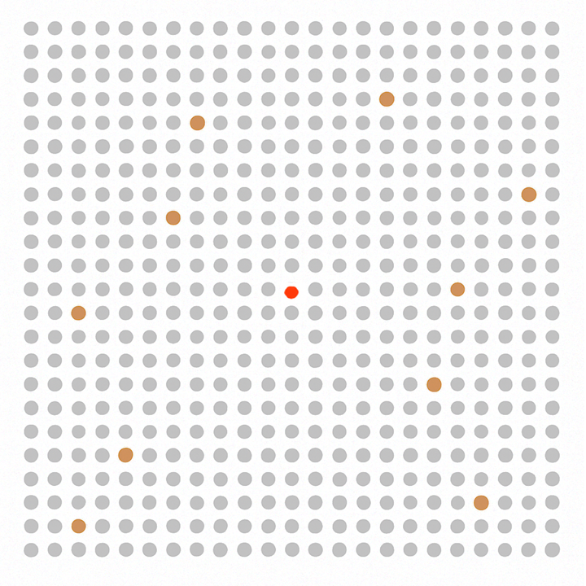
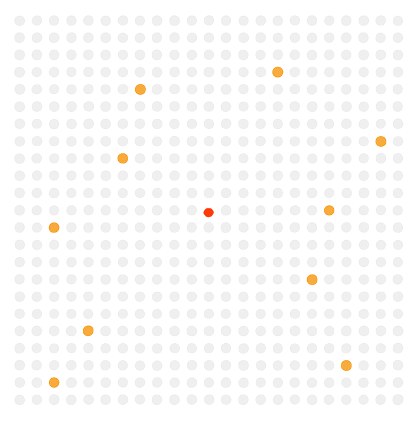

1 de cada 1000 tiene la enfermedad
Si la prevalencia es del 0,1%, solo 1 de cada 1000 pacientes tiene realmente la enfermedad.

Falsos positivos con una prueba del 99%
Si la prueba falla un 1% de las veces, de los 999 que no tienen la enfermedad,
unos 10 darán positivo por error.

El resultado final
Ahora se ven solo los 11 positivos (1 verdadero + 10 falsos).
Eso significa que solo 1 de cada 11 positivos es real:
1/11 = 0,0909 → 9%.

Conclusión
Aunque la prueba sea muy buena (99% de precisión), si la enfermedad es muy poco frecuente,
la mayoría de positivos serán falsos.
Ir al desenlace →